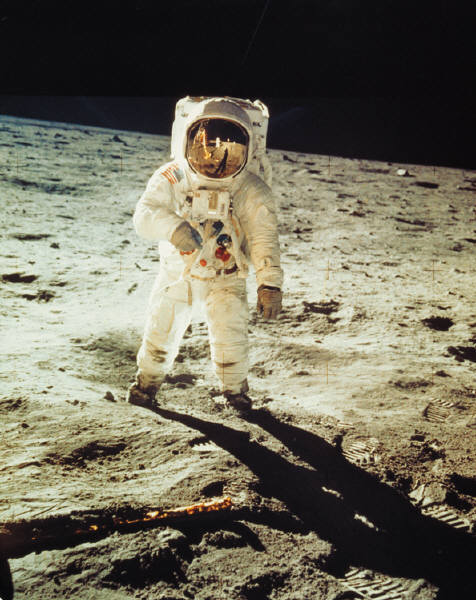
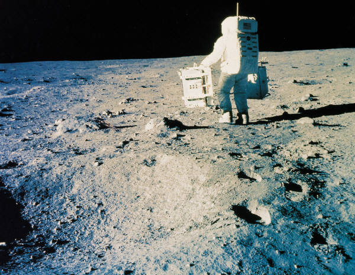
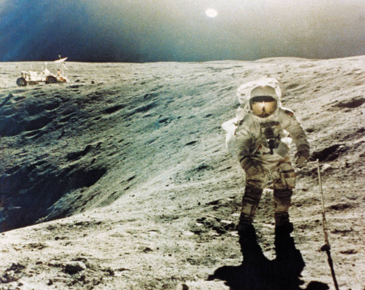
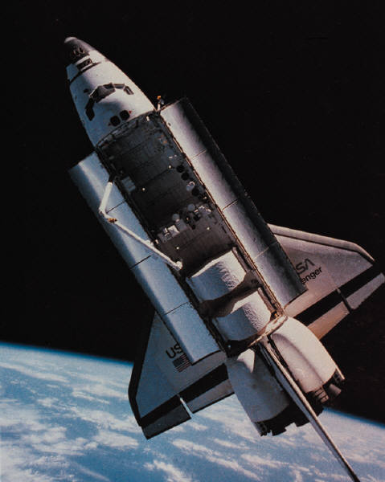

En los 60´s en hombre llego a la Luna utilizando tecnologías que hoy en día serían un tanto rudimentarias.
En los 60´s en hombre llego a la Luna utilizando tecnologías que hoy en día serían un tanto rudimentarias.
La Conquista
Esta página trata acerca de una de las conquistas mas apacionantes del ser humano, quiza tan importante como cuando cortes conquisto el nuevo mundo, estamos hablando de la conquista de la Luna.
 Antes de alunizar los Astronautas tuvieron que rondar alrededor de la Luna, experiencia que según comentarios de éstos, fue peligroso pero inolvidable.
Antes de alunizar los Astronautas tuvieron que rondar alrededor de la Luna, experiencia que según comentarios de éstos, fue peligroso pero inolvidable.
 Todo el mundo estuvo a la expectativa para ver por televisión el momento en el que un hombre pisara la superficie de la Luna por primera vez.
Todo el mundo estuvo a la expectativa para ver por televisión el momento en el que un hombre pisara la superficie de la Luna por primera vez.
 Esta es una de las fotografías más difundidas en la historia del hombre, es la primera huella del hombre en la Luna.
Esta es una de las fotografías más difundidas en la historia del hombre, es la primera huella del hombre en la Luna.
|  | En esa misión hubo mucha actividad cientifica en la superficie Lunar. |
|  |  |
 Así se ve la Tierra desde la Luna, esta es quizá una de las vistas mas bellas de nuestra casa.
Así se ve la Tierra desde la Luna, esta es quizá una de las vistas mas bellas de nuestra casa.
 |
 |
 |
 |
Con la Tecnología Moderna, hemos podido conquistar el espacio y hasta vivir en él. |  |